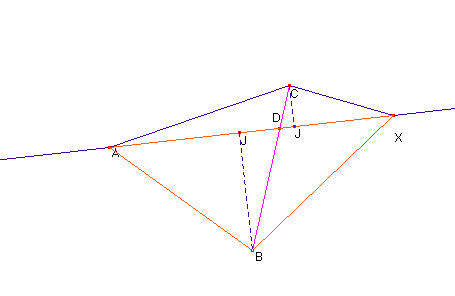

Propuesta actual 16-31 de Noviembre de 2002
Propuesto con permiso de su autor, profesor Tomás Recio de la Universidad de Cantabria. Problema 65
Problema 1.12.2 Dado un triángulo ABC y un punto arbitrario X, sea D el
punto de intersección de la recta AX con el lado opuesto CB. Probar que la
razón entre las áreas de los triángulos AXC y AXB es igual a la de las
longitudes de los segmentos CD y DB.

Sean CJ y BI las alturas respectivas sobre AX de los triángulos AXC y AXB.
La razón entre las áreas de los triángulos AXC y AXB, con un lado común, AX, es igual a la razón entre las alturas respectivas sobre éste, esto es, igual a la razón entre CJ y BI, que, a su vez, debido a la semejanza de los triángulos rectángulos CJD y BID es igual a la razón entre CD y DB como se quería demostrar.
Saturnino Campo Ruiz, profesor de Matemáticas del I.E.S. Fray Luis de León (Salamanca)